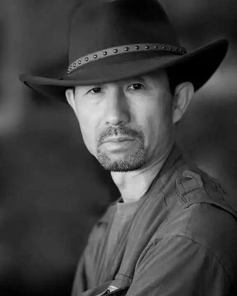
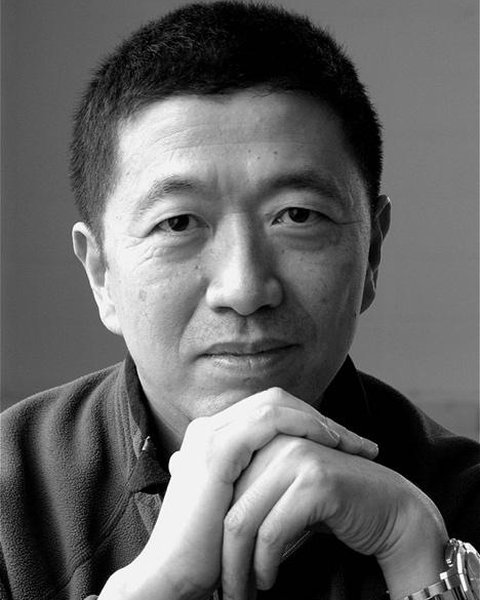
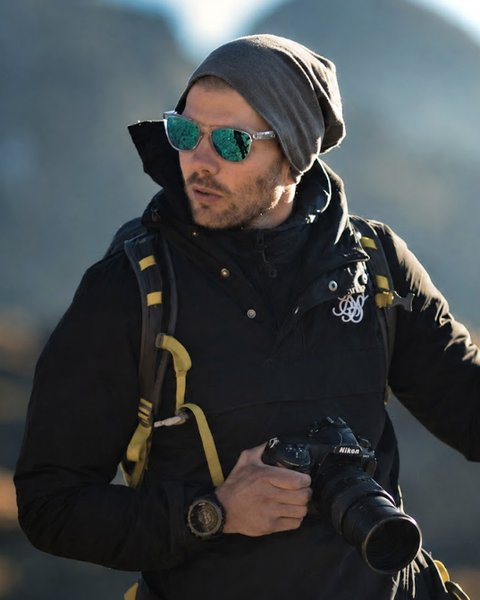
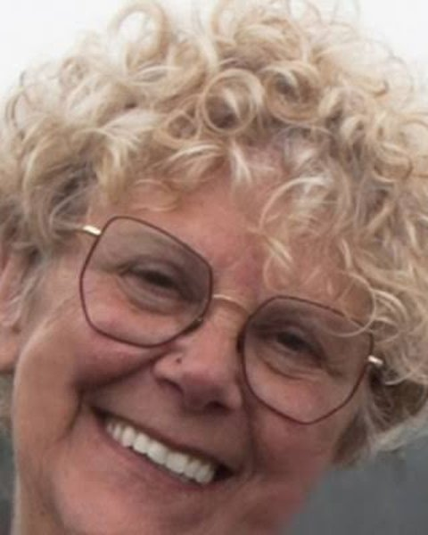
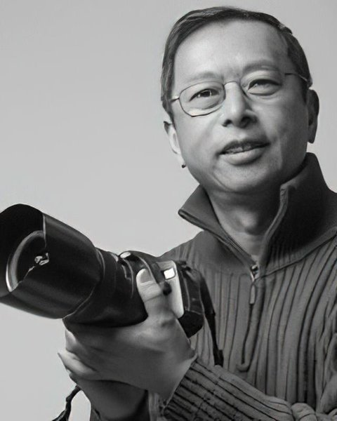
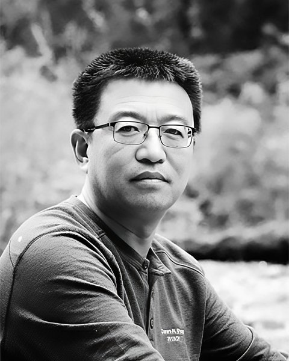
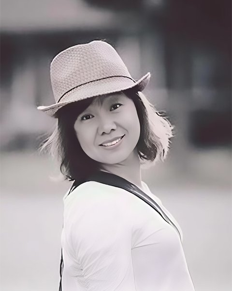
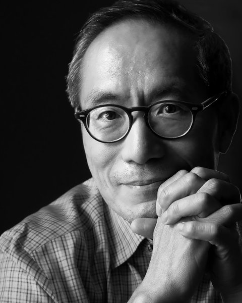
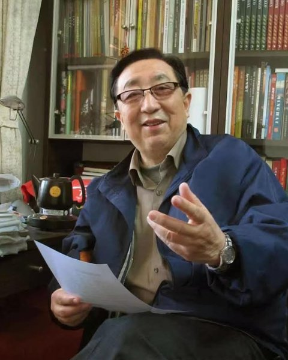

6th WMPA · Judging Panel
Every entry is judged anonymously, over multiple rounds, by an international panel of photographers, curators and educators from the United States, Canada, the Netherlands, Belgium and China.

Two-time recipient of the American Benny Gold Award (62nd and 70th ceremonies). His honors include the Sino-Canadian Cultural Outstanding Contribution Award from the Canadian government (2017), the Lifetime Achievement Award at the first Canadian IPF International Photography Festival (2015), and the Gold Award at the 5th China Printing Awards.
His work is held by numerous art institutions and private collectors. He has often judged international exhibitions and directed photography festivals, and has published three albums: Black and White World, Black and White Vision and Black and White Realm.

A CUSPEA scholar who has lived in the United States for over 30 years, Dr. Fan has worked across physics, medicine and photography. He holds a Ph.D. in Physics, is a specialist in radiological medicine and a Fellow of the American Association of Physicists in Medicine (AAPM).
He is a curator and China Ambassador for the renowned online gallery 1x.com and a founding member of the Four Apertures Photography Team. His award-winning work is frequently published, has been shown in many international exhibitions, and is held by several image agencies.
JohnFanPhotography.com
An internationally renowned landscape photographer known for powerful, distinctive portrayals of the natural world. Driven by a passion for fresh perspectives, he has explored and photographed some of the world's most remote and dramatic mountain landscapes. His compositions, adventurous spirit and highly recognizable style have earned him international acclaim and a strong global following.
maxrivephotography.com
Based in Bruges, Belgium, Yvette is the Primary Magazine Editor of 1x.com. She began with analog photography, developing her own film in a home darkroom, exhibited in Belgium and won awards in numerous competitions before moving naturally to digital. For her, photography is less a profession than a way of life. As a WMPA judge she looks beyond technical perfection: the soul, emotion and story in an image are what make a photograph meaningful and memorable.
1x.com/photoma
Former Senior Advisor to the U.S. Federal Reserve Board and a contracted photographer with China Tourism Press in Hong Kong, devoted to landscape photography for over twenty years. Honors include the Qilu International Photography Award at the 3rd Jinan International Photography Biennale (2010), a Bronze Award at the World Overseas Chinese Photography Exhibition (2013), and an Honorable Mention in the UN Arts Foundation's 2020 Travel Landscape competition. More than 100 of his photographs are in the Federal Reserve Board's collection.

Holds dual degrees in arts and sciences from Tsinghua University and is a senior nuclear-power cost engineer with a passion for mobile photography. Former Vice President of the Atlantic Photographers Association and Vice Chairman and Art Mentor of the North American Mobile Photography Association; photojournalist for Maple Voice Canada; certified senior landscape photographer on TuChong. Honors include the 2020 CAPA Mobile Photography Club Gold Award and first place in the 2021 CAPA city category. Since 2020 he has given more than ten public mobile photography lectures and taught over 300 students.
1x.com/SeanHuang
Freelance photographer and instructor of practical mobile photography in Toronto, Vice President of the Atlantic Photographers Association and former Art Mentor of the North American Mobile Photography Association. Recent honors include the 2025 RHCC Theme Silver Award and 2025 CAPA Theme Honorable Mention, alongside the 2020 RHCC Black & White Macro Gold Award and the 2018 North American Mobile Photography Competition Gold Award (Art). Some 600 of her works are featured on 1x.com.
1x.com/emmazhao
Born in Hangzhou, Professor Tan studied mathematics at Zhejiang University and earned his Ph.D. in mathematics at UCLA, later teaching at Indiana University and West Chester University of Pennsylvania. Devoted to photography since 2006, he has held solo exhibitions in the U.S. and China and joined group shows at United Nations Headquarters, the Tianjin Art Museum and in New York. He has taught black-and-white and documentary photography at Guizhou University's School of Art, lectured at many universities, organized more than seventy talks for the "Time Micro-Classroom", and taught over one hundred lectures on Western art appreciation.

Retired Professor at the Beijing Film Academy, Honorary Dean of Huaguang Photography College and Advisor to the China Overseas Chinese Photography Association. A filmmaker since graduating in 1961, his works include The Maritime Silk Road and the award-winning TV drama The Years of Studying with Zhou Enlai. Former Chair of the Theoretical Committee of the China Photographers Association, author of Fundamentals of Photographic Aesthetics and Introduction to Photographic Appreciation, and honored in 2006 as an Outstanding Photographer of New China.